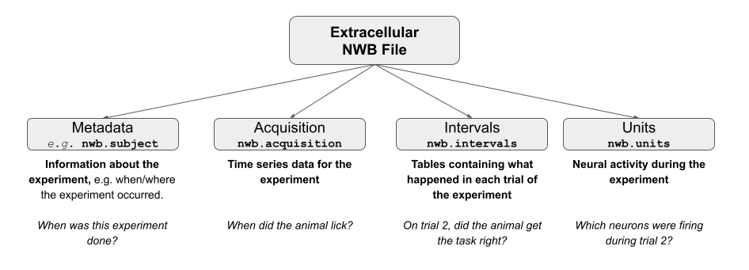

Working with NWB in Python#
On the previous page, we demonstrated how to obtain a dataset with DANDI. Now that you have a dataset downloaded, let’s take a closer look at what it contains.
Working with our NWB file in Python requires PyNWB, a package specifically designed to work with NWB files.
Below, we’ll use the NWBHDF5IO class from this package, which will allow us to easily read NWB files.
Note: Before running this notebook, please ensure that you have set up your coding environment (How to Use this Book) and completed the previous section to obtain the dataset we’ll be interacting with below.
Step 1. Setup#
# Import modules from the PyNWB package
from pynwb import NWBHDF5IO
Step 2. Read the NWB file#
We can access the data in our NWB file in two steps:
Assign our file as an NWBHDF5IO object
Read our file
The first step is done using the NWBHDF5IO class to create our NWBHDF5IO object and map our file to HDF5 format. Once we have done this, we can use the read() method to return our nwb file.
For more information on how to read NWB files, please visit the Reading an NWB file section from the NWB Basics Tutorial.
Note: Each dataset may contain multiple NWB files for different subjects and sessions for a given experiment. Make sure you specify the exact file path to the single NWB file you wish to read. Below, we’ll give the filename for one .nwb file within the folder that you downloaded in the last chapter.
# set the filename
filename = '000006/sub-anm369962/sub-anm369962_ses-20170310.nwb'
# assign file as an NWBHDF5IO object
io = NWBHDF5IO(filename, 'r')
# read the file
nwb_file = io.read()
print('NWB file found and read.')
print(type(nwb_file))
NWB file found and read.
<class 'pynwb.file.NWBFile'>
Step 3. Access Information within the NWB File Hierarchy#
One of the first steps when working with a new dataset is to figure out what is in the dataset, and where. Each NWB file is composed of various groups, which either contain attributes of our file (metadata) or the data itself.
Metadata is a common term to describe all of the information about an experiment. This could include everything from when the experiment was conducted, the ID of the subject (animal, human, goblin, etc.), the equipment details, etc. In essence, the metadata provides the context of the experiment. This is one of the first things you should review when you’re encountering a new dataset.
Here is the structure of a typical NWB file:

In order to see which groups are in our file, we can use the fields attribute to return a dictionary containing the the Groups of our NWB file. The dictionary keys are the various groups within the file which we will use to access the data we’re ultimately interested in.
Need a refresher on dictionaries? Consider working through the free Codecademy Python 3 lesson, or check the other resources on the Data Science in Python page.
# Get the Groups for the nwb file
nwb_fields = nwb_file.fields
print(nwb_fields.keys())
dict_keys(['session_description', 'identifier', 'session_start_time', 'timestamps_reference_time', 'file_create_date', 'experimenter', 'related_publications', 'acquisition', 'keywords', 'epoch_tags', 'electrodes', 'electrode_groups', 'devices', 'intervals', 'subject', 'trials', 'units', 'experiment_description', 'institution'])
Experiment Metadata#
Let’s first pull out some metadata for the experiment we downloaded.
If you wish to access the related publications of the experimental data that you just downloaded, you can do so by accessing the related_publications attribute of your NWB file object. Plug in the “doi:” address that prints below into a browser window to check out the original publication describing this data.
# Print the related publication
nwb_file.related_publications
('doi:10.1038/s41586-018-0642-9',)
Each NWB file will also have information on where the experiment was conducted, which lab conducted the experiment, as well as a description of the experiment. This information can be accessed using institution, lab, and experiment_description, attributes on our nwb_file, respectively.
# Get metadata from NWB file
print('The experiment within this NWB file was conducted at',nwb_file.institution,'.'\
,nwb_file.experiment_description)
The experiment within this NWB file was conducted at Janelia Research Campus . Extracellular electrophysiology recordings performed on mouse anterior lateral motor cortex (ALM) in delay response task. Neural activity from two neuron populations, pyramidal track upper and lower, were characterized, in relation to movement execution.
As you might have noticed at this point, we can access datasets from each group in our nwb_file with the following syntax: nwb_file.GROUPNAME, just as we would typically access an attribute of object in Python. Below we will demonstrate some of the most useful groups within an NWB object.
Acquisition#
The acquisition group contains datasets of acquisition data, mainly TimeSeries objects belonging to this NWBFile.
nwb_file.acquisition
{'lick_times': lick_times pynwb.behavior.BehavioralEvents at 0x4911458000
Fields:
time_series: {
lick_left_times <class 'pynwb.base.TimeSeries'>,
lick_right_times <class 'pynwb.base.TimeSeries'>
}}
In this file, the acquisition group contains one dataset, lick_times. This dataset has one field, time_series, which contains two time series objects, lick_left_times and lick_right_times. To access the actual data arrays of these objects we must first subset our dataset of interest from the group. We can then use timestamps[:] to return a list of timestamps for when the animal licked.
# select our dataset of interest
dataset = 'lick_times'
field = 'lick_right_times'
lick_r_dataset = nwb_file.acquisition[dataset][field]
# return the first 10 values in data array
lick_r_data_array = lick_r_dataset.timestamps[:10][:10]
print(lick_r_data_array)
[336.727461 336.898631 337.144963 337.223463 338.218792 338.579457
338.927119 338.959289 339.451954 339.587953]
Intervals#
The intervals group contains all time interval tables from the experiment – things like, did the animal respond on the behavioral trial? Usefully, we can take intervals and convert it to a tidy dataframe using to_dataframe().
# Select the group of interest from the nwb file
intervals = nwb_file.intervals
# Pull out trials and assign it as a dataframe
interval_trials_df = intervals['trials'].to_dataframe()
interval_trials_df.head()
| start_time | stop_time | type | response | stim_present | is_good | cue_start_time | pole_in_time | pole_out_time | |
|---|---|---|---|---|---|---|---|---|---|
| id | |||||||||
| 1 | 323.171 | NaN | lick right | early lick | 0 | 1 | 7.49698 | 3.93949 | 5.12748 |
| 2 | 329.570 | NaN | lick right | early lick | 0 | 1 | 11.81280 | 4.94181 | 5.94198 |
| 3 | 335.971 | NaN | lick right | incorrect | 0 | 1 | 6.62964 | 4.12915 | 5.12931 |
| 4 | 342.371 | NaN | lick right | incorrect | 0 | 1 | 6.41964 | 3.91915 | 4.91931 |
| 5 | 348.289 | NaN | lick right | incorrect | 0 | 1 | 12.66990 | 10.16930 | 11.16950 |
In case you’re wondering what these columns are, the description attribute provides a short description on each column of the dataframe.
# return the description of each col in our dataframe
for col in interval_trials_df:
print(col,':',intervals['trials'][col].description)
start_time : Start time of epoch, in seconds
stop_time : Stop time of epoch, in seconds
type :
response :
stim_present : is this a stim or no-stim trial
is_good : good/bad status of trial (bad trials are not analyzed)
cue_start_time : onset of response period
pole_in_time : onset of sample period
pole_out_time : onset of the delay period
Units#
But wait, where’s all of the neural data? The units group in our NWB file contains the processed signals from our individual neurons (units), including information about the spike sorting quality as well as the spike times – when each of these cells fired an action potential. Much like the intervals group, units can also be assigned to a dataframe.
Why “units”? In extracellular electrophysiology, we aren’t recording directly from neurons. Instead, we’re recording from the space around many neurons. As a result, researchers need to take the recorded voltage streams and determine which spikes in voltage originated in different neurons. This process is called spike sorting (discussed in detail in a future lesson!). Although we can do spike sorting fairly automatically and be fairly confident that we’ve correctly identified different neurons, we can’t know with complete confidence. So, researchers tend to call “neurons” in extracellular recordings “units,” reflecting that we think it’s a separate neuron, but don’t know for sure. You’ll also see “multi-unit activity” (MUA) in some papers, in which case the researchers were unable to separate single neurons.
units = nwb_file.units
units_df = units.to_dataframe()
units_df.head()
| depth | quality | cell_type | spike_times | electrodes | |
|---|---|---|---|---|---|
| id | |||||
| 1 | 665.0 | Poor | unidentified | [933.873288, 948.2774710000008, 950.5357110000... | x y z imp ... |
| 2 | 665.0 | Fair | unidentified | [329.95417899999956, 330.01945899999953, 330.0... | x y z imp ... |
| 3 | 715.0 | unidentified | [329.94165899999956, 329.9998989999996, 330.00... | x y z imp ... | |
| 4 | 715.0 | [] | unidentified | [329.93145899999956, 330.7492189999995, 330.77... | x y z imp ... |
| 5 | 715.0 | Fair | unidentified | [331.09961899999956, 332.14505899999955, 333.3... | x y z imp ... |
If we’d like to know where these spikes are coming from, we can look at the electrodes attribute. The electrodes group contains metadata about the electrodes used in the experiment, including the location of the electrodes, the type of filtering done on that channel, and which electrode group the electrode belongs to.
# electrode positions
electrodes = nwb_file.electrodes
electrodes_df = electrodes.to_dataframe()
electrodes_df.head()
| x | y | z | imp | location | filtering | group | group_name | |
|---|---|---|---|---|---|---|---|---|
| id | ||||||||
| 1 | 0.0 | 0.0 | 0.0 | -1.0 | brain_region: ALM; brain_subregion: N/A; corti... | Bandpass filtered 300-6K Hz | H-129: 64 pynwb.ecephys.ElectrodeGroup at 0x49... | H-129: 64 |
| 2 | 0.0 | 0.0 | 0.0 | -1.0 | brain_region: ALM; brain_subregion: N/A; corti... | Bandpass filtered 300-6K Hz | H-129: 64 pynwb.ecephys.ElectrodeGroup at 0x49... | H-129: 64 |
| 3 | 0.0 | 0.0 | 0.0 | -1.0 | brain_region: ALM; brain_subregion: N/A; corti... | Bandpass filtered 300-6K Hz | H-129: 64 pynwb.ecephys.ElectrodeGroup at 0x49... | H-129: 64 |
| 4 | 0.0 | 0.0 | 0.0 | -1.0 | brain_region: ALM; brain_subregion: N/A; corti... | Bandpass filtered 300-6K Hz | H-129: 64 pynwb.ecephys.ElectrodeGroup at 0x49... | H-129: 64 |
| 5 | 0.0 | 0.0 | 0.0 | -1.0 | brain_region: ALM; brain_subregion: N/A; corti... | Bandpass filtered 300-6K Hz | H-129: 64 pynwb.ecephys.ElectrodeGroup at 0x49... | H-129: 64 |
Wondering what something in this table is? We can once again dig out the descriptions:
Not sure what’s happening below? Consider working through the Codecademy Python 3 course for a refresher on for loops.
# return the description of each col in our dataframe
for col in electrodes_df:
print(col,':',nwb_file.electrodes[col].description)
x : the x coordinate of the channel location
y : the y coordinate of the channel location
z : the z coordinate of the channel location
imp : the impedance of the channel
location : the location of channel within the subject e.g. brain region
filtering : description of hardware filtering
group : a reference to the ElectrodeGroup this electrode is a part of
group_name : the name of the ElectrodeGroup this electrode is a part of
Now that we have an idea of what this file contains, we can finally take a look at some of the data! We’ll do that in the next section. 💃
Additional Resources#
For a detailed explanation of all groups contained within an NWB File object please visit the pynwb.file.NWBFile section of the PyNWB documentation.